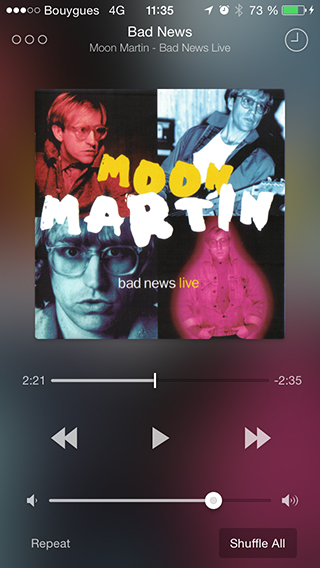

Player
Ecoute is based on the default music app core. Everything is supported, such as Equalizer, Sound Check, and iTunes Match. Have a better control over your music library by maintaining your finger on any item in order to quickly play/shuffle it, or even ‘view all’ if it’s an artist/composer/genre. Moreover, Ecoute adds cool features like “play next” and shuffle mode “by albums”.